Bluety
BluetyContenu du kitCartes et circuits imprimsComposantsConnecteurs et supportsInterrupteursBoutonsVisserieCblesPrparatifsBoitierInventaire des outilsConseils OptionsCarte Bus DaughterCarte Blink'n SwitchDos du circuit imprim (partie 1)Avant : supports des dip-switchAvant : Connecteurs E/S et AlimentationAvant : interrupteursAvant : LEDsDos du circuit imprim (partie 2)FinitionFaade avantEcran LCD 4x20Bouton d'alimentationFaade arrireInstallation et branchementsInstallation SC126Branchement BusDaughter Blink'n SwitchFaade avantFaade arrireBouton PowerUtilisationPort de contrle (13/0Dh)Ports d'entre sortieUtiliser le port A ou B en entreUtiliser le port A ou B en sortieEcran LCD
Bluety est un ensemble de circuits imprims pour un boitier destin recevoir un ordinateur compatible RC2014.
L'ensemble se compose de plusieurs lments :
- Une faade avant avec des ouvertures pour un cran LCD et de nombreux connecteurs, LEDs et interrupteurs.
- Une faade arrire avec des connecteurs, interrupteurs et ouvertures pour faciliter les branchements.
- Blink'n Switch, une carte d'entre-sortie avec deux ports d'entre/sortie complets et un port de contrle en sortie.
- Bus Daughter, une carte compatible RC2014 pour connecter Blink'n Switch au bus RC2014.
- Un cran LCD 4x20 avec adaptateur I2C.
La conception de Bluety est base sur un boitier bleu que l'on peut se procurer sur un site marchand chinois. La couleur de ce boitier a donn son nom Bluety, ainsi que la taille des faades. Les circuits imprims et si possible les composants ont galement t choisis de la couleur bleue. Mais Bluety conviendra tout autre boitier de dimensions suprieures (pour les faades) et d'une profondeur suffisante pour l'ordinateur choisi, cependant l'utilisateur devra pratiquer une ouverture sur les faades de son boitier pour pouvoir y fixer les faades de Bluety.
Bluety est galement conu pour accueillir le kit SC126 de Stephen S. Cousins et la carte PiZero Terminal qui possde une sortie HDMI. Il s'agit d'un ordinateur quip d'un processeur Z-180 18 MHz (compatible Z-80), de deux ROM Flash de 512 Ko permettant le choix entre les logiciels de contrle Small Computer Monitor et RomWBW, d'une RAM Flash de 512 Ko, ainsi que de nombreux contrleurs de priphriques intrgrs tels que deux ports srie, un port SD et un port I2C.
Bluety est galement utilisable avec le RC2014 de Spencer Owens et de nombreux ordinateurs respectant le bus RC2014, bien que l'cran LCD ne soit pas directement utilisable en raison de l'absence de bus I2C. Le logiciel de contrle en cours de dveloppement est actuellement destin l'interface I2C.
Je vous souhaite un bon assemblage et beaucoup de plaisir avec Bluety.

Extension de bus
L'ordinateur SC126 possde 2 connecteurs de bus seulement mais il a galement un connecteur d'extension latral, conu pour recevoir par exemple le kit SC113 qui propose 5 connecteurs de bus (ainsi qu'un nouveau connecteur d'extension).
La carte SC113 est trop longue pour le boitier de Bluety, aussi j'en ai driv une version SC113-Tiny qui propose 3 connecteurs de bus au lieu de 5 et convient aux dimensions du boitier. Il prsente lui aussi un connecteur d'extension pour ajouter un SC113 l'extrieur du boitier.
Notez que cette carte SC113-Tiny n'est pas supporte par Stephen S. Cousins, et je fournis uniquement le circuit imprim en option avec Bluety. Je vous conseille de commander un SC113 officiel auprs de Stephen (https://www.tindie.com/products/tindiescx/sc113-modular-backplane-kit-for-rc2014/) et d'utiliser ses composants sur la carte SC113Tiny. Quelques composants du kit SC113 seront inutiliss mais le fonctionnement et l'assemblage sont identiques.

Interrupteur marche/arrt SC126
Bluety possde son propre bouton marche/arrt. Si vous n'avez pas encore assembl votre SC126, vous pouvez remplacer l'interrupteur par un connecteur trois broches et placer un jumper sur les deux broches loignes du bord de la carte afin de remplacer l'interrupteur en position ON.
Contenu du kit
Vrifiez le contenu du kit, et contactez moi en cas d'erreur. Vous pouvez aussi intervenir dans le groupe de discussion https://groups.google.com/forum/#!forum/rc2014-z80.
Avant toute chose, une prcaution importante.
 | Ne touchez pas les circuits intgrs et l'cran LCD sans tre quip d'un bracelet antistatique reli une masse. De prfrence, laissez les l'abri dans leur tui anti-statique jusqu'au moment de la fixation de la faade avant sur le boitier pour liminer le risque de les endommager avec de l'lectricit statique. Dans tous les cas, ne les placez pas sur le circuit avant d'avoir procd aux vrifications lectriques. |
 |
Dans le processus d'assemblage, les tapes o vous devrez procder une vrification ou un assemblage particulier seront indiques par ce panneau. N'ignorez pas ces tapes, elles garantissent le bon rsultat de l'assemblage. |
Cartes et circuits imprims
Veillez protger les deux faades de toute rayure, brulure, ou projection de flux lors des soudures. Ce sont les faces visibles donc conservez les l'cart lorsqu'elles ne sont pas ncessaires. Les faades ne ncessitent aucune soudure.
Les faades peuvent tre lgrement incurves mais ceci disparaitra aprs fixation sur le boitier
| Nombre | Carte | |
|---|---|---|
| 1 | Bus Daughter |  |
| 1 | Blink'n Switch | 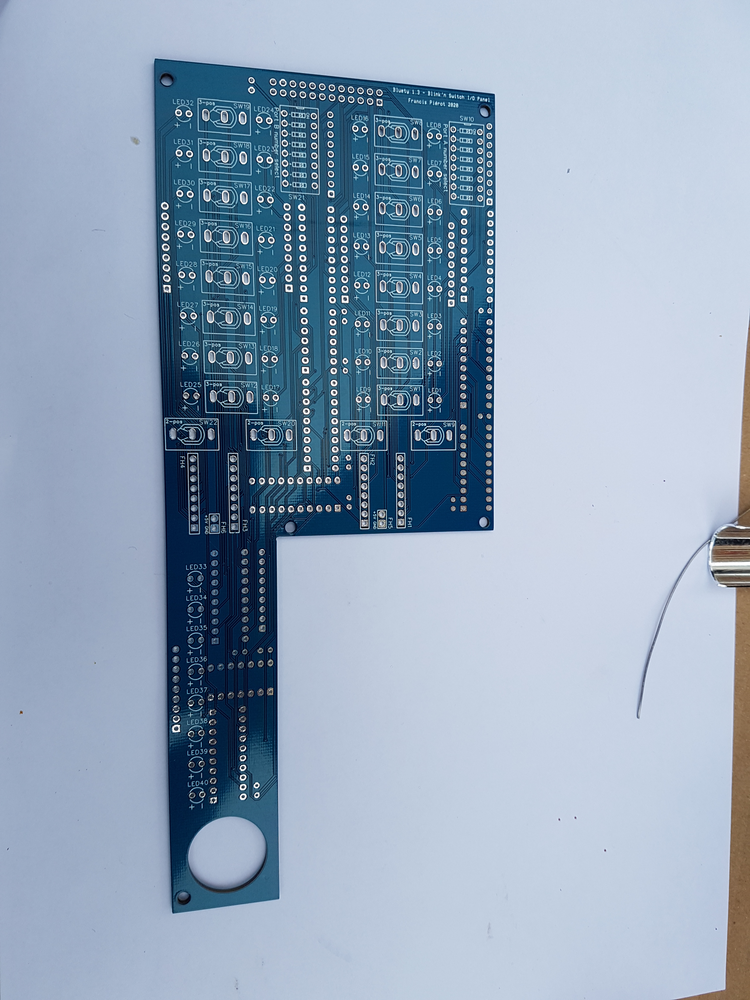 |
| 1 | Faade avant |  |
| 1 | Faade arrire |  |
Composants
| Nombre | Composants | |
|---|---|---|
| 40 | 8 LED 3mm bleues 16 LED 3mm vertes 16 LED 3mm jaunes |  |
| 11 | Condensateurs cramique 100nF (marqus 104) |  |
| 1 | Condensateur lectrolytique 100uF | 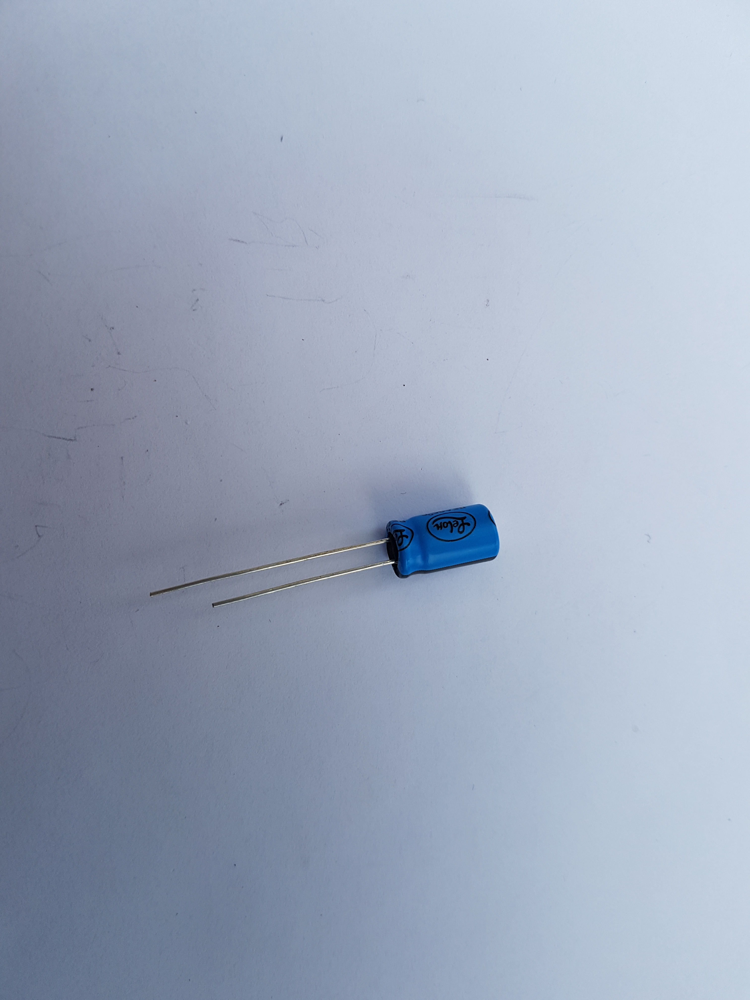 |
| 3 | Rseaux rsistance 10 KOhms (marqus 103) |  |
| 5 | Rseaux rsistance 470 Ohms (marqus 471) |  |
| 10 | Circuits intgrs : - 3x 74HCT273N - 2x 74HCT245N - 3x 74HCT688 - 2x 74HCT32 |  |
| 1 | Ecran LCD 4x20 rtroclair |  |
Connecteurs et supports
| Nombre | Connecteurs et supports de circuits intgrs | |
|---|---|---|
| 1 | Connecteur 40P angle droit | 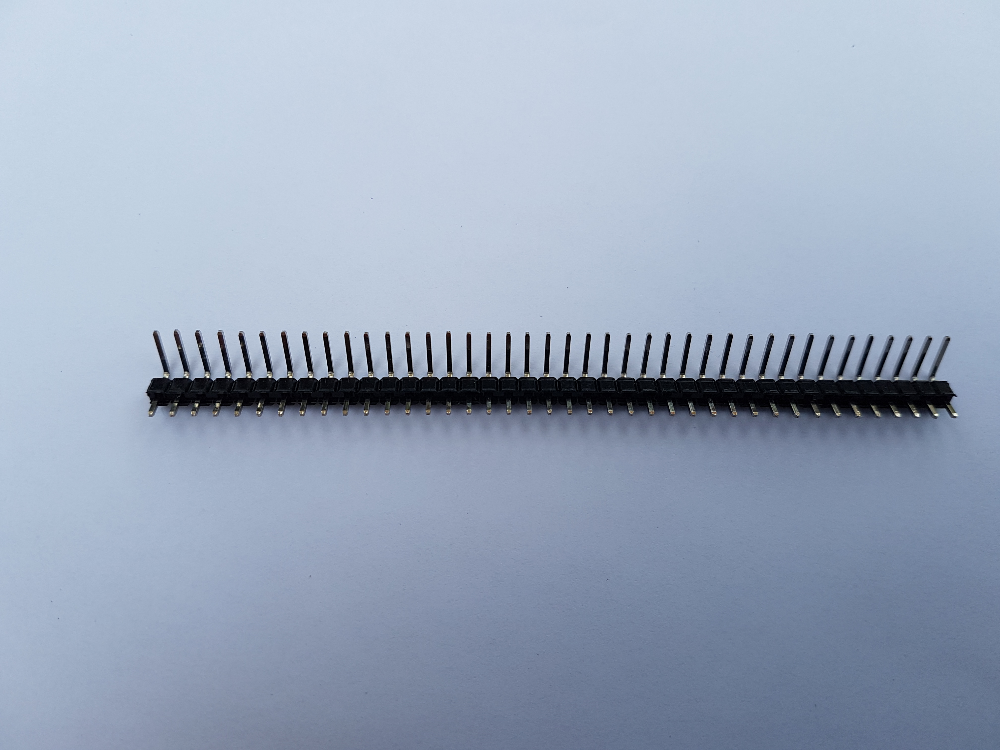 |
| 1 | Connecteur 2x12P mle angle droit | 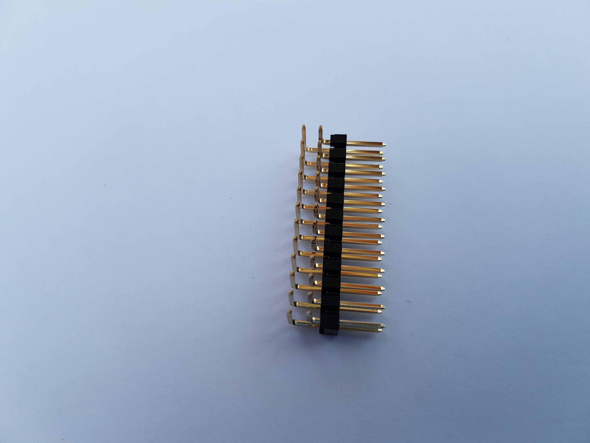 |
| 4 | Supports CI 16P |  |
| 2 | Supports CI 14P |  |
| 8 | Supports CI 20P |  |
| 2 | Connecteurs femelle 2P pattes de 11mm |  |
| 4 | Connecteurs femelle 8P pattes de 11mm |  |
| 1 | Connecteur mle 2x12P droit |  |
| 1 | Connecteur d'alimentation |  |
| 1 | Connecteur HDMI |  |
Interrupteurs
| Nombres | Interrupteurs | |
|---|---|---|
| 4 | Interrupteurs ON/ON ou ON/OFF |  |
| 16 | Interrupteurs ON-OFF-ON | 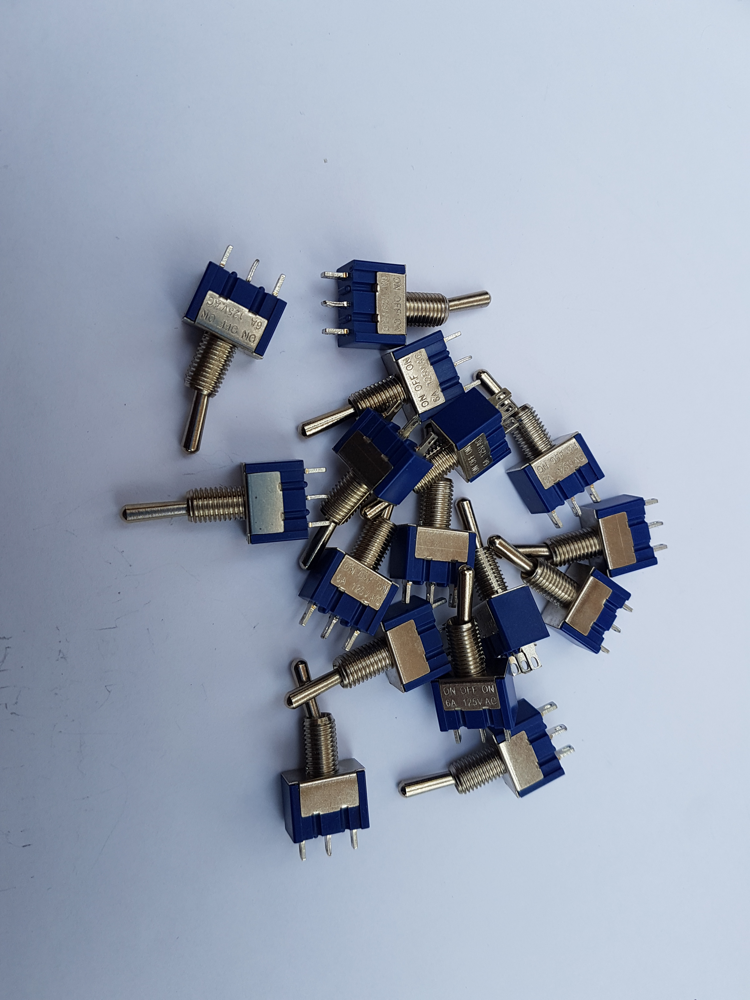 |
| 2 | Interrupteurs dipswitch 8 positions |  |
| 1 | Micro interrupteur avec cble 2 fils |  |
| 2 | Micro interrupteur avec cble 3 fils |  |
NOTE : La couleur des interrupteurs peut varier.
Boutons
| Nombre | Boutons | |
|---|---|---|
| 1 | Bouton Reset |  |
| 1 | Bouton marche/arrt avec LED |  |
Visserie
| Nombre | Visserie et Supports | |
|---|---|---|
| 6 | Boulons M2x8 (interrupteurs faade arrire) |  |
| 2 | Boulons M3x8 (connecteur HDMI) |  |
| 5 | Supports 12mm avec vis et crou (faade avant) | 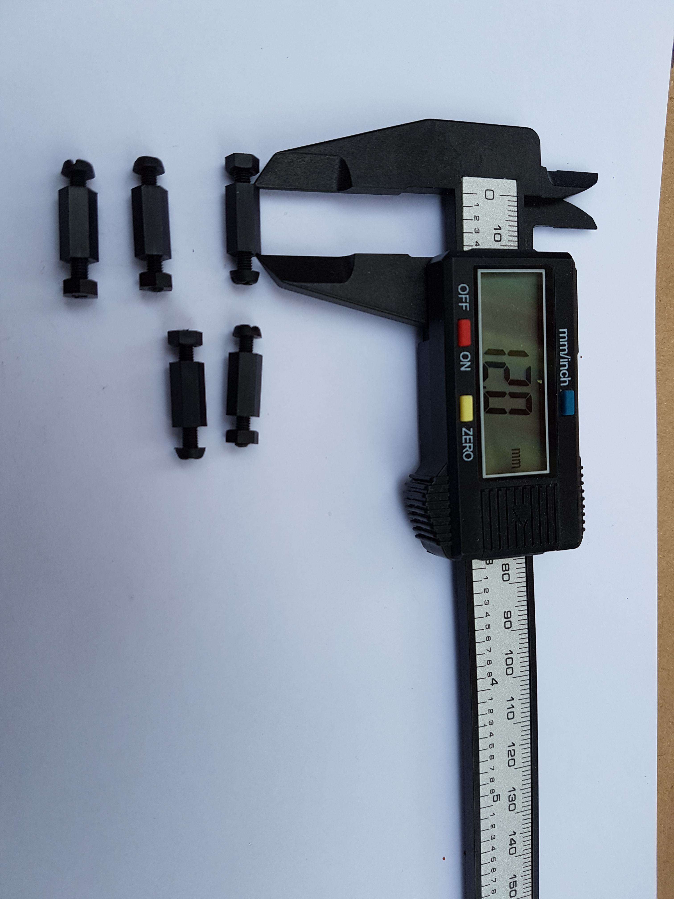 |
| 4 | Supports 10mm avec vis et crou (cran LCD) |  |
| 6 | Supports 15mm avec vis et crou (fond de boitier) |  |
NOTE : la couleur et la matire des supports 15mm peut varier.
Cbles
Bluety est livr avec des cbles sur mesure dont la longueur convient pour le boitier de rfrence d'une profondeur de 190 mm. Si vous utilisez un boitier plus profond vous devrez utiliser des rallonges de type Dupont, ou sertir vous mmes des cbles la bonne longueur.
| Nombre | Cbles | |
|---|---|---|
| 1 | Cble HDMI/microHDMI |  |
| 1 | Cble bouton marche/arrt avec 3 connecteurs |  |
| 1 | Cble alimentation principale rouge |  |
| 1 | Cble alimentation principale noir |  |
| 1 | Cble reset 2 fils Note : la couleur de ce cble peut varier. |  |
| 1 | Cble I2C 4 fils Note : la couleur de ce cble peut varier. |  |
| 2 | Cbles Dupont 12 fils |  |
Prparatifs
Prparez votre quipement.
Boitier
Bluety est conu pour un boitier bleu que l'on peut trouver sur la plupart des sites marchands : AliExpress, Banggood, Amazon, eBay. Dans le champ de rechherche de votre site prfr, entrez "Blue Metal Electronic Enclosures"et choisissez le boitier de dimensions 250 x 190 x 110 (mm) dans les rsultats. Attention il existe d'autres boitiers d'aspect similaire mais de dimensions infrieures qui ne conviendront pas Bluety, donc vrifiez bien les dimensions.
 |  |
|---|---|
 |  |
Le cot est d'environ 20 40 euros / dollars livraison comprise. Les cots de livraison en provenance de chine sont trs bas par rapport ceux au dpart de France, aussi je ne propose pas le boitier dans le kit car son poids augmenterait considrablement le cot de livraison de Bluety.
Il y a une autre raison pour laquelle je ne propose pas le boitier : vous devez vous attendre ce que les coins des cadres plastifis blancs puissent tre abims durant le transport : j'ai eu ce problme sur 3 exemplaires que j'ai commands.

C'est aussi parce que je ne peux pas garantir le bon tat des angles que je ne propose pas le boitier avec le kit Bluety. Toutefois avec un peu de travail au cutter et du papier de verre trs fin, on peut arrondir les angles. Par ailleurs les deux cadres sont identiques et symtriques, donc on peut les dmonter pour placer le meilleur en faade avant, ou retourner un cadre si les coins du bas sont en meilleur tat que ceux du haut. Au final ces dfauts sont peu visibles.
Si vous possdez une imprimante 3D de taille sufffisante vous pouvez reproduire ces cadres, mais je ne propose pas de modle. N'hsitez pas me contacter si vous pouvez fabriquer ces cadres ou leur modle 3D.
Si vous souhaitez utiliser un autre boitier, vous devez vous assurer que ses dimensions seront d'au moins 250 mm de largeur par 110 mm de hauteur, avec une profondeur d'au moins 190 mm. Ces dimensions conviennent au SC126 et toutes les versions du RC2014 y compris la version Pro avec 8 connecteurs de bus.
Inventaire des outils
Ce tableau liste les outils dont vous aurez besoin pour assembler le kit.
| Outil | |
|---|---|
| Station de soudure, de prfrence avec temprature rglable |  |
| Fil soudure (diamtre 0.6mm ou 0.8mm recommand) |  |
| Pince fine |  |
| Pince fine coude | 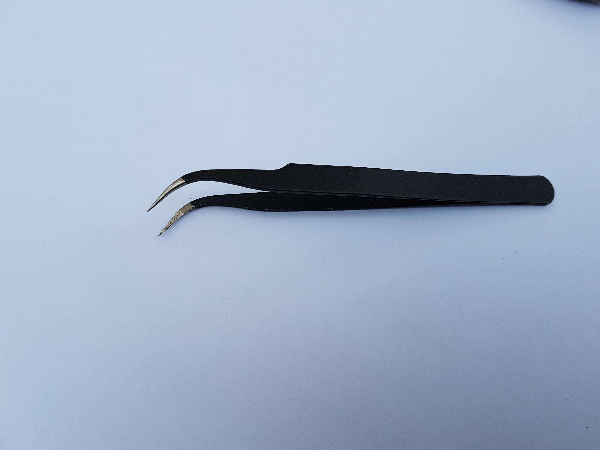 |
| Pince coupante coude |  |
| Pompe soudure |  |
| Tapis silicone (ou protection isolante du plan de travail). Ce tapis protge votre plan de travail des brulures mais aussi des rayures, et isole le circuit. Nettoyez rgulirement la surface afin d'viter que les rsidus de mtal ou de soudure ne rayent les circuits imprims et les faades. Dbarrassez les bouts de mtal et de soudure, passez le tapis sous l'eau du robinet et schez le. Faites cette opration rgulirement pendant l'assemblage, ne laissez pas les dbris s'accumuler sur le tapis. |  |
| Bracelet anti-statique. Reliez la pince une masse. Ne reliez pas la pince directement une prise de terre, vous seriez au contact avec la terre de tout votre rseau lectrique et risqueriez de vous charger d'lectricit au lieu de l'inverse. Si vous n'avez pas de boitier spcial vous pouvez relier la pince la sortie ngative d'un transformateur 5V ou au boitier mtallique d'un ordinateur. |  |
| Ncessaire de nettoyage de pane de fer souder (brosse mtallique et flux) |   |
| Cls ALLEN 2 et 1.4mm (Pour vis M2x8 et M3x8) | 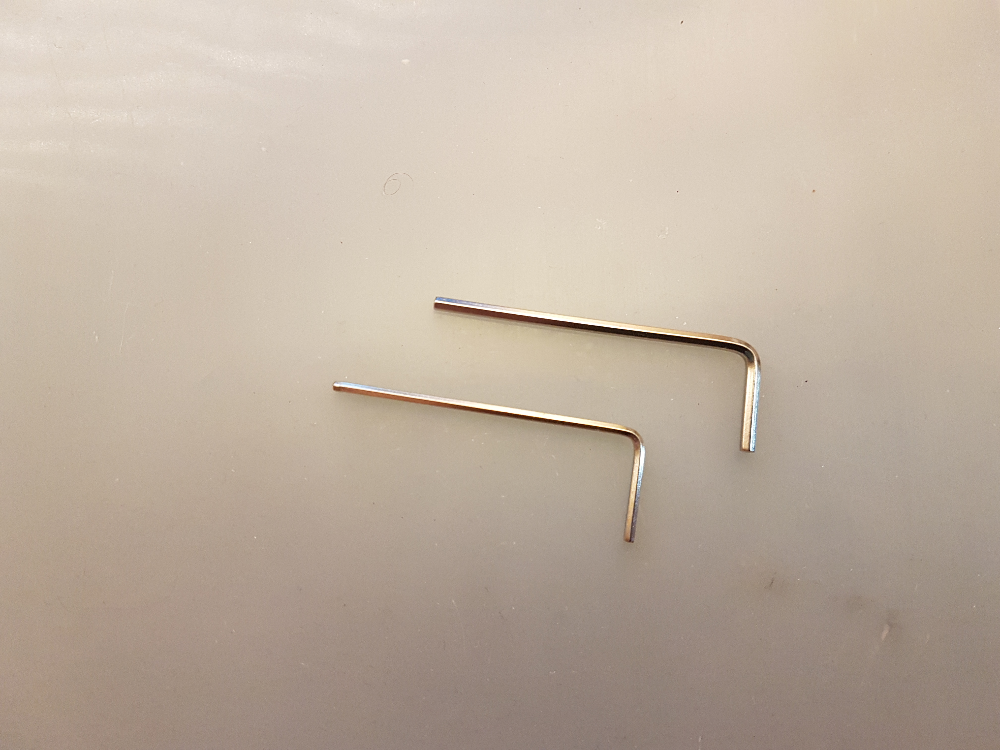 |
| Tournevis avec ttes cruxiforme, plat, allen |  |
| Multimtre avec mesure de voltage et rsistance, ventuellement test de continuit |  |
Conseils
Respectez les consignes d'assemblage pour obtenir une belle faade avec les composants bien aligns.
L'ordre des branchements et des assemblages est destin vous faciliter le travail : ne sautez pas les tapes.
Pour les soudures, voici une mthode qui limite les dgts en cas d'erreur :
- souder une seule patte avec peu de soudure
- vrifier que le composant a t mis au bon endroit et dans le bon sens
- en cas d'erreur, retirer la soudure et replacer correctement le composant
- quand tout est correct, souder toutes les autres pattes
- complter la soudure de la premire patte
Si vous placez trop de soudure ou soudez toutes les pattes, il sera difficile voire impossible de rparer une erreur comme un interrupteur ou une LED l'envers. Avoir une seule patte lgrement soude permet de vrifier l'alignement mais aussi la polarit lorsque celle-ci est importante.
Je recommande en particulier cette mthode pour tous les composants apparaissant en faade avant.
Options
L'quipement idal de Bluety est le kit SC126 de Stephen S. Cousins. Des versions spcifiques de RomWBW et SCM seront bientt disponibles pour que l'cran LCD soit accessible en programamtion, mais aussi en coh de la console standard.
Le boitier cibl par Bluety est disponible chez BangGood
Carte Bus Daughter
Cette carte se connecte sur n'importe quel emplacement de bus d'un ordinateur RC2014 et vhicule les signaux utiles jusqu' la carte Blink'n Switch d'entre / sortie. Son assemblage ne prsente pas de difficult majeure mais vous devrez faire attention l'orientation des connecteurs.
| Etape | Description | |
|---|---|---|
| 1 | Soudez le condensateur C9, marqu "104" (100 nF). L'orientation n'a pas d'importance. Coupez les pattes au dos | 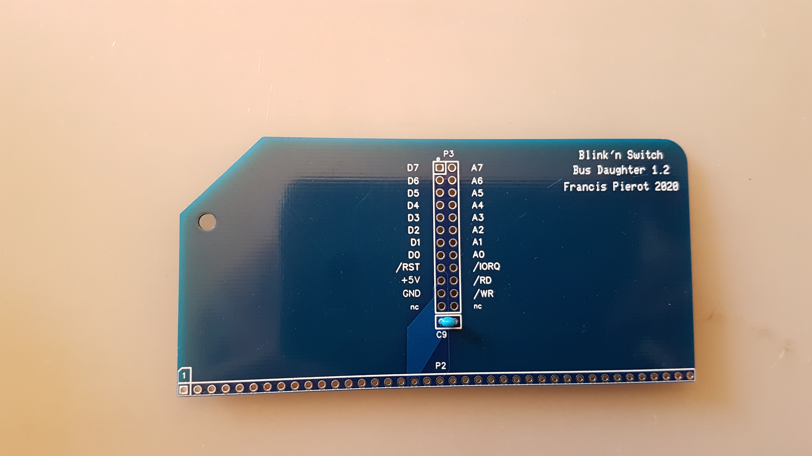 |
| 2 | Soudez le connecteur 2x12P P3. Attention souder le petit ct coud |   |
| 3 | Soudez le connecteur 40P P2. Soudez le petit ct. Ne chauffez pas trop sinon le plastique ramollit et les pattes peuvent pivoter. Si cela arrive, rchauffez la soudure et remettez la patte en position l'aide d'une pince | 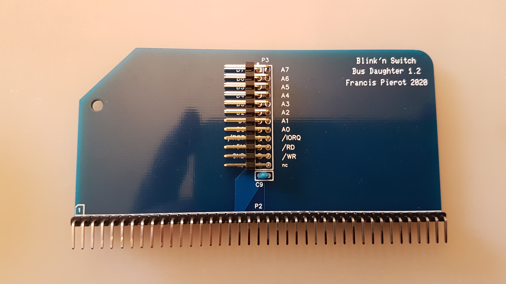 |
Carte Blink'n Switch
Cette carte offre deux ports d'entre/sortie complets, avec des LEDs tmoins et des interrupteurs pour contrler les entres, ainsi que 8 LEDs en faade pour le port de contrles 13 (0Dh) de l'ordinateur SC126 de Stephen S. Cousins. Ce port peut galement tre utilis par un ordinateur RC2014 pour afficher 8 bits sur les LEDs de la faade avant avec un OUT sur le port 13.
Le montage de cette carte ncessite plusieurs assemblages temporaires avec la faade avant pour que les composants apparaissant sur cette dernire soient correctement aligns. Respectez l'ordre de montage et les consignes pour avoir les meilleurs chances d'obtenir une belle faade.
Dos du circuit imprim (partie 1)
Placez le dos visible, (le trou du bouton marche arrt en bas gauche)
| Etape | Description | |
|---|---|---|
| 1 | Soudez les 10 condensateurs 100nF C1 C4 et C6 C11. |   |
| 2 | Soudez les 8 supports 20P et les 2 supports 14P, encoches vers le haut ou la gauche selon le cas. |   |
| 3 | Soudez les 3 rseaux de rsistance 10K RN1 RN4 RN7. |  |
| 4 | Attention ne pas confondre avec les 470 : le composant est marqu 103,ce qui signifie 10 x 10^3, soit 10 Kilo Ohms . | |
| 5 | Soudez d'abord une seule patte, vrifiez la position et le point de rfrence gauche, correspondant au petit carr imprim sur le circuit. Une fois la position vrifie soudez les autres pattes. |  |
| 6 | Soudez les 5 rseaux de rsistance 470 RN2 RN3 RN5 RN6 RN8. |  |
| 7 | Le composant est marqu 471, ce qui signifie 47 x 10^1, soit 470 Ohms. | |
| 8 | Attention au sens : alignez le point du composant avec le petit carr imprim gauche sur le circuit |  |
Pour les composants le ncessitant, coupez l'excdent des pattes au fur et mesure pour ne pas tre gn
Ne soudez pas le connecteur P1 et le condensateur C5 maintenant : ils gneraient la suite de l'assemblage.
Voici l'allure de la carte ce stade. Notez que les supports de circuit fournis sont de type "tulipe" de meilleure qualit que sur cette image.

Avant : supports des dip-switch
Important :
Tous les lments souds sur l'avant apparaissent en faade travers une ouverture, aussi une grande partie de l'assemblage consiste souder une seule patte, puis placer la faade pour vrifier et corriger l'alignement. Ainsi il est possible de rchauffer la soudure pour bouger l'lment en cas de problme d'alignement. Une fois celui-ci correct on peut souder le reste des pattes.
Tournez la carte pour voir l'avant, le trou du bouton power tant maintenant en bas droite.

| Etape | Description | |
|---|---|---|
| 1 | Soudez une patte de chacun des 2 supports CI 16P (SW10 et SW21), encoche vers la gauche. Ils serviront de base aux DIP-Switchs de slection du numro de port. |  |
| 2 | Vissez les 5 supports 12mm sur la carte : support sur le dessus, boulon au dos. |  |
| 3 | Ils vont servir plusieurs assemblages provisoires afin de bien aligner les composants de la faade, donc ne les dmontez pas tout le long de cette tape. L'espace de certains boulons est restreint une fois les composants en place, aussi il est prfrable de maintenir le boulon et tourner le support plutt que l'inverse. |  |
| 4 | Si un composant ncessite un moment de tourner un boulon, dvissez lgrement le support, tournez un peu le boulon et revissez le support. | |
| 5 | Emboitez un second support 16P et un DIP-Switch sur chacun des deux supports. |  |
| 6 | Fixez la faade avant avec deux ou trois supports en passant les dipswitch travers leurs ouvertures. Si un switch n'est pas bien align, faites chauffer la soudure de la patte et ralignez l'ensemble pour qu'il soit bien align avec l'ouverture de la faade. |  |
| 7 | Retournez l'ensemble et terminez la soudure des supports. | |
| 8 | Dvissez les vis de la faade, dmontez la ainsi que les ensembles support+dip-switch emboits pour qu'il ne reste que les deux supports souds. |
Avant : Connecteurs E/S et Alimentation
| Etape | Description | |
|---|---|---|
| 1 | Posez le circuit imprim, face avant sur le dessus, sur des supports de prfrence non mtalliques afin qu'il soit au dessus du plan de travail et permette aux composants de glisser dans leurs emplacements. Veillez assurer une hauteur d'environ 10 mm. |  |
| 2 | Positionnez les 4 connecteurs femelles 8P longues pattes et les 2 connecteurs femelles 2P longues pattes | 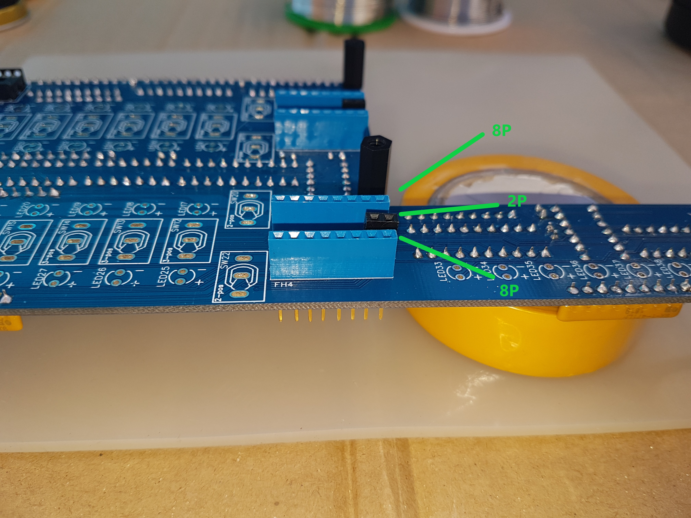 |
| 3 | Fixez la faade. Ne mettez pas la vis centrale, elle gnerait le positionnement des connecteurs. |  |
| 4 | Posez la faade arrire sur la faade avant et perpendiculairement de manire recouvrir les ouvertures des connecteurs. Vous pouvez placer une feuille de papier entre les deux pour ne pas risquer d'abimer leur revtement. |  |
| 5 | Retournez dlicatement l'ensemble et posez le l'envers sur le plan de travail. |  |
| 6 | A l'aide d'une pince, placez les connecteurs dans les ouvertures de la faade. C'est un peu dlicat, ne forcez pas pour ne pas tordre les pattes. Si cela arrive, dmontez la faade, sortez le connecteur, redressez les pattes et recommencez l'opration. |  |
| 7 | Les connecteurs doivent tre bien placs dans les encoches de la faade. | 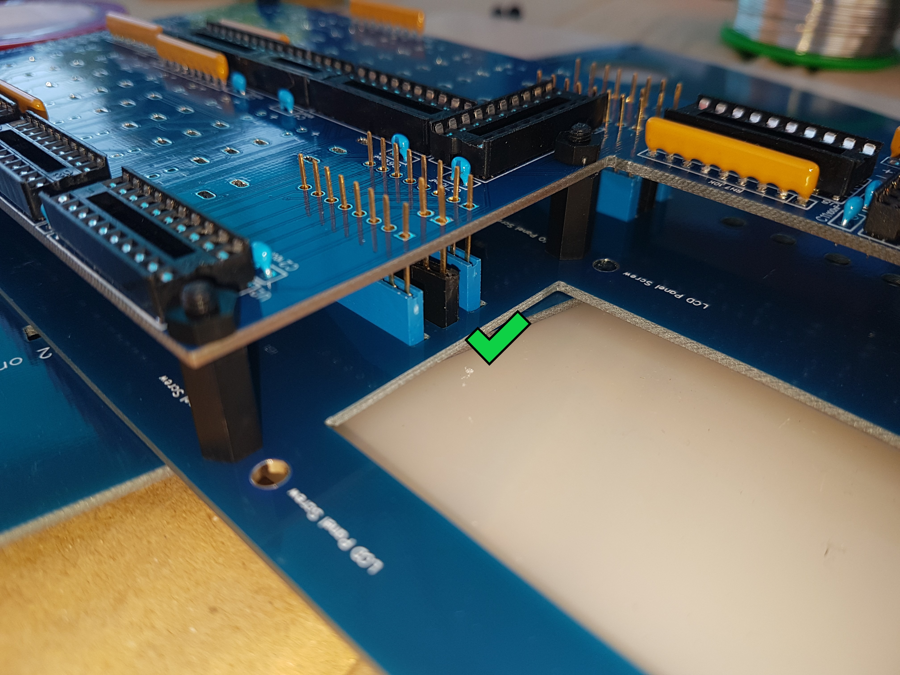 |
| 8 | Lorsque tout est bien en place, soudez une patte de chacun des 6 connecteurs. | 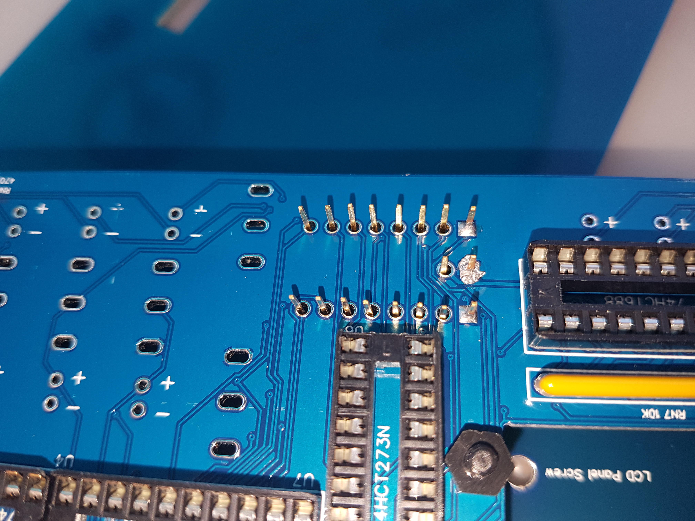 |
| 9 | Retournez l'ensemble pour vrifier l'alignement. |  |
| 10 | Lorsque tout est correctement plac, retournez et terminez la soudure des pattes restantes. | |
| 11 | Coupez l'excdent de pattes. Attention aux projections ventuelles des petits bouts de mtal car ces pattes sont trs ridgides : protgez vos yeux. | |
| 12 | Dvissez la faade. |
Avant : interrupteurs
Prparez les 16 interrupteurs trois positions ON-OFF-ON et 4 interrupteurs deux positions ON-OFF ou ON-ON.
- Sparez les tas pour ne pas vous tromper. Le kit prsente normalement deux couleurs diffrentes mais cela peut dpendre du stock.
| Etape | Description | |
|---|---|---|
| 1 | Positionnez les 8 interrupteurs trois positions ON-OFF-ON du port A, SW1 SW8. Attention placer l'encoche situe sur le pas de vis vers le bas pour chaque interrupteur. Ils doivent tre tous orients de la mme faon car ils ne sont gnralement pas totalement symtriques. | 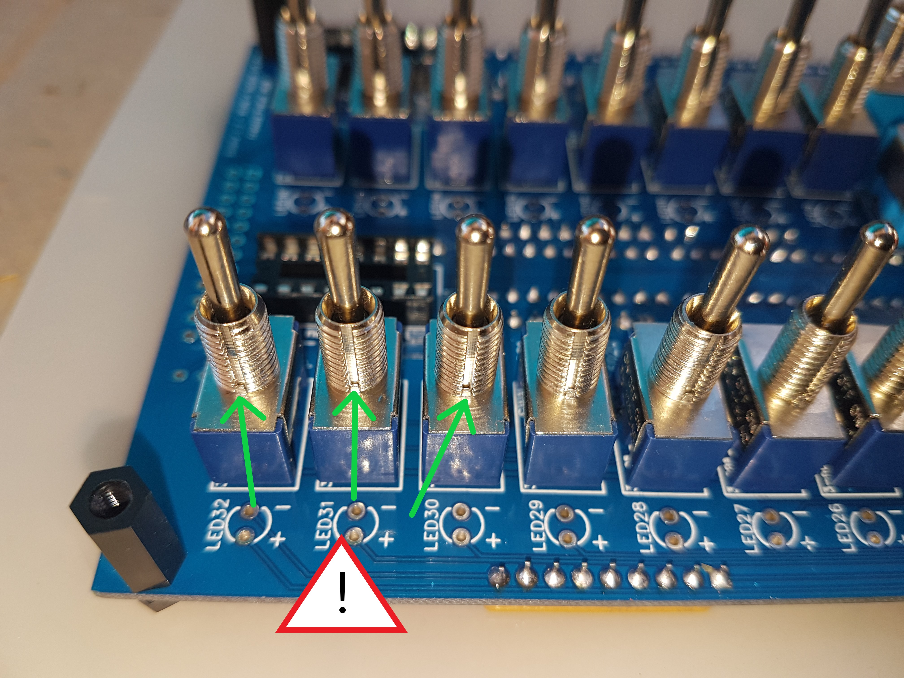 |
| 2 | Positionnez les 8 interrupteurs trois positions ON-OFF-ON SW17 SW24. Mme prcaution pour l'encoche du pas de vis qui doit tre en bas. | |
| 3 | Positionnez les 4 interrupteurs deux positions ON-OFF ou ON-ON SW9, SW11, SW20, SW22, encoche du pas de vis vers le bas. |  |
| 4 | Placez tous les boutons en position basse ou centrale (pour ceux trois positions) | |
| 5 | Glissez et fixez la faade l'aide des vis. | |
| 6 | Assurez vous que tout est bien align et qu'aucun bouton ne s'est dlog, sinon replacez le et refaites la fixation de la faade. Vrifiez que les interrupteurs situs les plus droite sont bien deux positions et non trois. | |
| 7 | Retournez la carte, et soudez un seul point de chacun des 20 interrupteurs avec une petite quantit de soudure. | |
| 8 | Soulevez lgrement l'extrmit de la carte ct LCD afin que les interrupteurs soient bien plaqus contre le circuit, et que les pattes souder dpassent bien du circuit |  |
| 9 | Vrifiez l'alignement en retournant l'ensemble. Alignez les leviers l'aide d'une rgle ou d'un bord de la faade avant. Au besoin, chauffez le point de l'interrupteur mal align pour le replacer correctement. |   |
| 10 | Quant tout est bien align, soudez les autres pattes, remettez de la soudure sur la premire selon besoin. Faites ceci pour les 20 interrupteurs. N'hsitez pas charger en soudure, pour que l'ensemble assure une bonne solidit en plus du contact lectrique. |  |
| 11 | Remettez les interrupteurs en position basse | |
| 12 | Dvissez et enlevez la faade. |
Avant : LEDs
Prparez les LEDs :
- 16 vertes pour les ports d'entre
- 16 jaunes pour les ports de sortie
- vous pouvez inverser les couleurs vertes et jaunes selon votre got
- 8 bleues pour le port de contrle
- si vous prfrez avoir des LED remplaables, vous pouvez souder des supports femelles deux broches la place des LEDs, mais l'ajustement des LEDs la bonne longueur sera sensiblement plus compliqu. Cette possibilit est laisse votre apprciation et les supports ne sont pas fournis dans le kit.
Etape Description Illustration 1 Posez le circuit imprim, face avant sur le dessus, sur des supports de prfrence non mtalliques afin qu'il soit au dessus du plan de travail et permette aux LEDs de glisser dans leurs emplacements. Veillez assurer une hauteur d'environ 10 mm. 2 Placez les 16 LEDs vertes (ou jaunes) des ports d'entre LED1 LED8 et LED17 LED24. La patte la plus courte est l'anode et se place en haut sur le signe (-) du circuit imprim. 
3 Placez les 16 LEDs jaunes (ou vertes) des ports de sortie LED9 LED16 et LED25 LED32. La patte la plus courte est l'anode et se place en haut sur le signe (-) du circuit imprim. 4 Placez les 8 LED bleues du port de contrle LED33 LED40. La patte la plus courte est l'anode et se place en haut sur le signe (-) du circuit imprim. 5 Vrifiez une dernire fois que les pattes les plus courtes sont bien situes sur le haut, ainsi que l'applat de la LED. 6 Fixez de nouveau la faade l'aide des 5 vis. Pensez bien visser la vis unique ct du trou du bouton marche/arrt : elle assurera le bon alignement des LED situes sous le LCD. 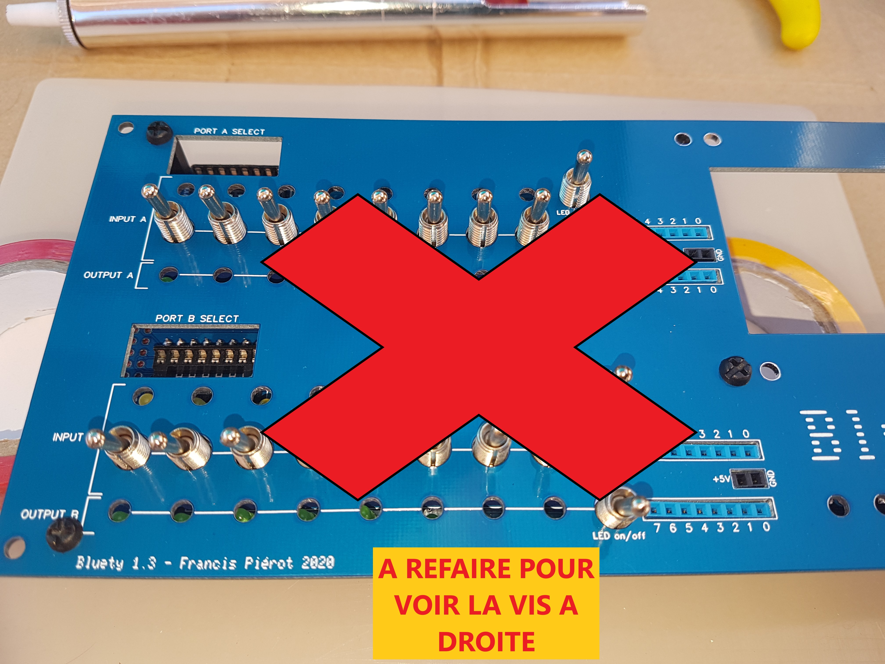 7 Soulevez l'ensemble : les LEDs glissent dans leur logement et se plaquent sur le circuit imprim. 8 Retournez dlicatement l'ensemble pour que les LEDs glissent en sens inverse et se placent dans leur ouverture sur la faade. Une grande partie d'entre elles va s'y positionner directement, pour les autres agissez avec une pince sur les pattes pour les placer dans leur ouverture en faade. Posez l'ensemble retourn sur le plan de travail, en appui sur les interrupteurs. 9 Si une LED est mal positionne, utilisez ses pattes et une pince pour la replacer correctement. Procdez dlicatement pour ne pas tordre les pattes. 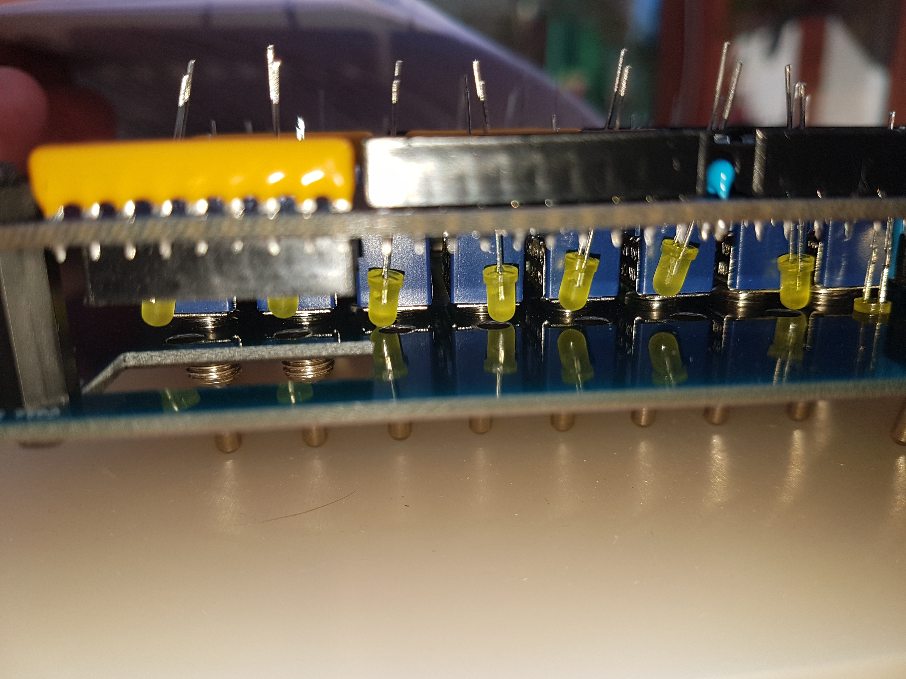 10 Vrifiez bien que toutes les LEDs sont places dans leur logement sur la faade en la regardant par en dessous. Elles doivent toutes dpasser de la mme hauteur. 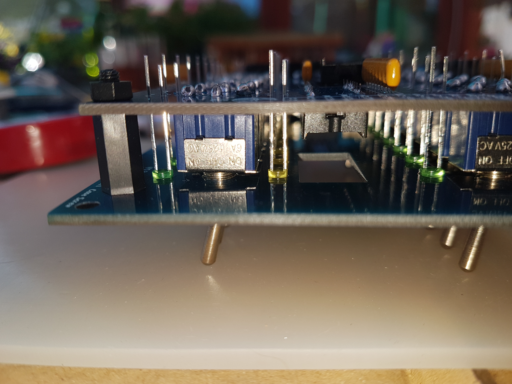 11 Vrifiez une dernire fois que les pattes les plus courtes sont bien sur le symbole (-) du circuit. 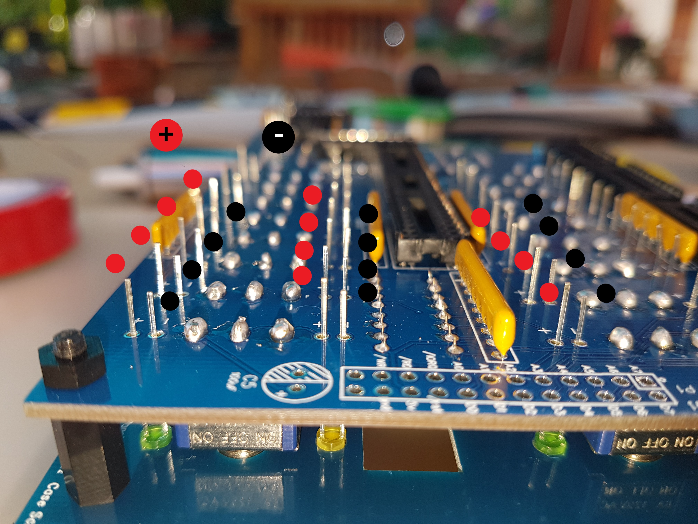 12 En cas d'erreur, vous devez retourner la carte, dvisser et ter la faade, remettre la LED dans le bon sens, revisser la faade et reprendre le bon positionnement des LEDs dans les logements. 13 Une fois tout bien positionn et vrifi, soudez les pattes des LEDs. 14 Coupez l'excdent des pattes 15 Dvissez la faade.
Dos du circuit imprim (partie 2)
| Etape | Description | |
|---|---|---|
| 1 | Retournez le circuit. | |
| 2 | Soudez le condensateur C5, attention la polarit la patte la plus courte est sur le (-). La bande noire avec le signe '-' doit tre face au demi cercle hachur sur le circuit imprim. Coupez les pattes de l'autre ct. | 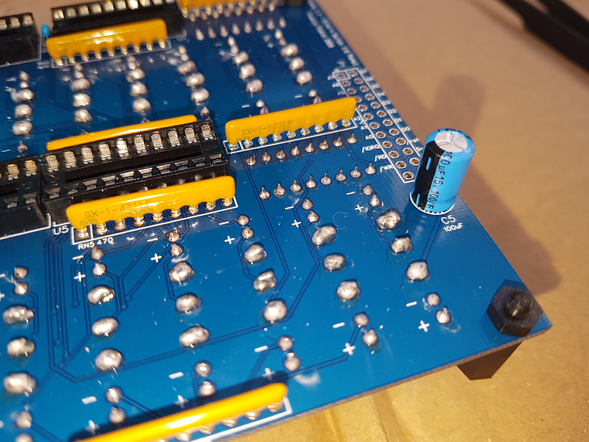 |
| 3 | Soudez le connecteur mle 2x12P P1. |  |
Finition
Nettoyez soigneusement la faade avec un chiffon doux ou microfibre.
N'utilisez aucun produit dtergent, solvant ou alcoolique. Les produits spciaux pour cran plat sont acceptables. Si vous souhaitez utiliser un produit, faites un essai sur un petit endroit au dos de la faade ou sur la carte Bus Daughter pour vrifier qu'il n'abime pas le vernis.
 IMPORTANT : Mettez votre bracelet anti-statique
IMPORTANT : Mettez votre bracelet anti-statique
| Etape | Description | |
|---|---|---|
| 1 | Installez les circuits intgrs dans leurs emplacements : 3x 74HCT273N 3x 74HCT688 2x 74HCT245N 2x 74HCT32 | |
| 2 | Revissez la faade. | |
| 3 | Emboitez les dip-switch sur leurs supports 16P puis emboitez les ensembles sur le circuit imprim travers l'ouverture en faade. | |
| 4 | Branchez les 2 cables 12 fils sur le connecteur P1. Reprez le fil A7 par sa couleur ou avec un petit autocollant plac l'extrmit libre. |  |
Faade avant
Pour assembler l'cran LCD et le bouton d'alimentation vous devez une dernire fois dvisser la faade pour carter Blink'n Switch.
Ecran LCD 4x20
Etape Description 1 Dvissez la faade. 2 Fixez les 4 supports 10mm l'cran, support sur l'avant et boulon au dos. 
3 Fixez le cble 4 fils sur le connecteur I2C.
Note : il est plus difficile de brancher le cble aprs la fixation de l'cran sur la faade.
4 Vissez l'ensemble sur la faade l'aide des vis. 
Bouton d'alimentation
A ce stade la faade est spare de Bink'n Switch.
| Etape | Description | |
|---|---|---|
| 1 | Si ce n'est pas fait, dvissez la faade. | |
| 2 | Vissez le bouton d'alimentation l'aide de l'crou. Si vous dsirez utiliser le joint, placez le sur le pas de vis l'intrieur du bouton pour qu'il aille s'appuyer sur l'extrieur de la faade, mais ce joint est facultatif | |
| 3 | Reprez les bornes du bouton : + et - l'extrieur alimentent la LED, NO est l'entre 5V, C est le fil de sortie 5V et NC ne sera pas connect. |  |
| 4 | Branchez le fil rouge long sur la borne centrale C |  |
| 5 | Branchez le cble 3 fils : | |
| les deux fils rouges sur les bornes + et C |  | |
| le fil noir sur la borne - | 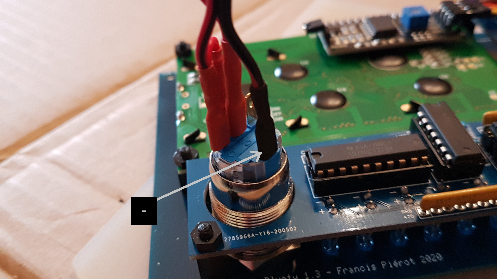 |
Les extrmits des cbles qui n'ont pas encore t branches vont rester libres pour l'instant.
Faade arrire
Cette faade arrire offre :
- des micro-interrupteurs pour contrler les mmoires FLASH de l'ordinateur SC126
- un connecteur HDMI et une ouverture permettant de passer un cable USB pour une liaison directe vers un PiZero Terminal RC2014 et de relier la prise HDMI de celui-ci
- un connecteur d'alimentation pour un transformateur 5V prise jack
- un bouton reset
- une ouverture en bas de la faade pour passer les cables vers les connecteurs arrire du SC126
Les micro interrupteurs sont livrs souds avec un cable de longueur convenant un SC126. Si vous utilisez un boitier plus grand ou un autre ordinateur, vous pouvez utiliser des cables Dupont male/femelle comme rallonge, les branchements restent identiques. Notez que les autres ordinateurs RC2014 ne proposent pas forcment le choix entre deux ROMs.
Cette tape de l'assemblage ne concerne que le placement des lments, les branchements seront effectus ultrieurement.
| Etape | Description | |
|---|---|---|
| 1 | Vissez le connecteur HDMI l'aide des deux vis M3x8. | |
| 2 | Vissez le micro interrupteur avec 2 fils sur la position verticale "flash select" l'aide des vis M2x8 et d'une cl Allen (non fournie). ATTENTION : si vous avez plac la RomWBW en U1 sur SC126, vous devez mettre les deux fils en bas. Si par contre vous avez plac la rom SCM en U1 vous devez mettre les deux fils en haut. | 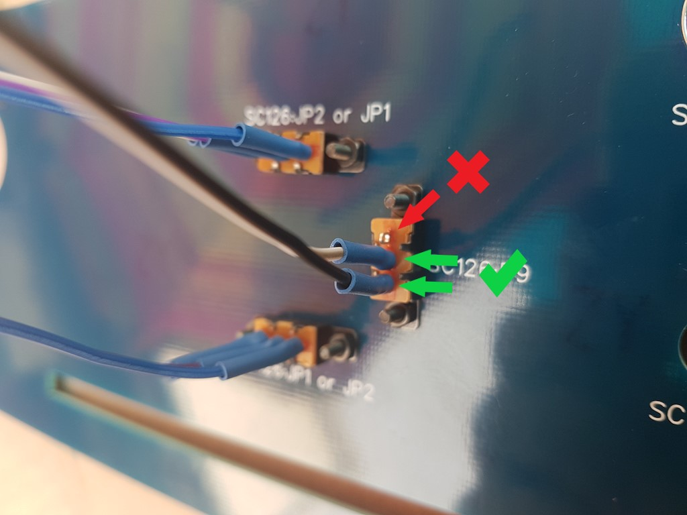 |
| 3 | Vissez les deux interrupteurs avec 3 fils aux positions "flash protect" horizontales l'aide de 4 vis M2x8. | |
| 4 | Vissez le connecteur d'alimentation, patte la plus longue en bas (c'est le '-') |  |
| 5 | Vissez le bouton reset, la position des pattes n'a pas d'importance. Branchez le cable Reset avec les exxtrmits jaunes. |  |
La faade arrire prsente alors l'aspect suivant.
Installation et branchements
Tous les composants sont fixs ou souds, il reste maintenant effectuer les branchements et l'installation de l'ordinateur dans le boitier.
Installation SC126
| Etape | Description | |
|---|---|---|
| 1 | Dvissez les pieds du fond du boitier et mettez l'abri les pieds et leurs vis pour plus tard. | |
| 2 | Placez le gabarit de perage (drilling template) au fond du boitier et scotchez le pour le maintenir en place. Vous pouvez jouer lgrement sur la position mais n'avancez pas trop le gabarit vers la faade avant, l'interrupteur avant du SC126 risque de buter contre Blink'n Switch ou la faade. Ne le reculez pas trop non plus car ce sera alors le connecteur HDMI qui risquera de buter contre des composants d'une carte situe sur le RC2014. Si vous avez assembl votre SC126 sans l'interrupteur | |
| 3 | Percez le fond du boitier l'emplacement des marques sur le gabarit avec une mche de 3mm. Pour percer ces trous, la technique est de donner un coup de pointeau au centre du trou, puis d'utiliser une perceuse colonne pour faire un trou bien vertical et bien centr. On peut faire un avant-trou avec une mche de 1mm si on le souhaite mais le fond du boitier n'tant pas trs pais une mche de 3mm ne rencontrera pas de difficult particulire. Vous pouvez huiler lgrement pour viter que le papier du gabarit brle. | |
| 4 | Seuls 3 trous sont ncessaires pour le SC126 car un des supports est en face d'un pied du boitier et ne sera pas viss, mais il assurera un rle pour la stabilit du circuit imprim. | |
| 5 | FACULTATIF : Vous pouvez percer un trou supplmentaire pour le SC113Tiny qui procure 3 connecteurs de bus supplmentaires. Lui aussi ne sera fix que par une vis, mais pour la stabilit du tout la carte utilise deux supports. | |
| 6 | FACULTATIF : Vous pouvez faire une ouverture sur le ct droit du boitier (vu de l'arrire) pour que le port d'extension du SC113Tiny soit accessible l'extrieur. | |
| 7 | Branchez le cble I2C, l'accs sera moins ais une fois la faade arrire mise en place. Prenez soin de respecter la correspondance des fils : reprez le fil GND sur l'cran LCD pour le brancher sur la broche 0V du connecteur I2C sur le SC126 et faites de mme pour les trois autres cbles, l'ordre reste le mme donc vous ne devez pas avoir de fil crois. |   |
| 8 | FACULTATIF : Branchez un cble Dupont (non fourni) sur le port srie 1 si vous souhaitez l'utiliser plus tard, l aussi l'accs sera moins ais une fois la faade arrire en place. |  |
| 9 | Vissez les supports sur le SC126 : 4 pour SC126, et 2 pour SC113Tiny si vous l'utilisez. |  |
| 10 | Fixez le SC126 l'aide des supports boulons vis. Notez qu'avec le gabarit fourni, seuls 3 supports du SC126 et 1 support du SC113 Tiny seront visss. Si vous souhaitez visser les 6 supports vous devrez avancer lgrement la carte en direction de l'avant mais l'interrupteur situ sur SC126 peut vous en empcher. Les vis des supports iront sous le boitier, et les boulons sont normalement dj visss sur le dessus de la carte. | |
| 11 | A cet instant vous allez fixer les deux faades dfinitivement afin de terminer les derniers branchements. * Fixez la faade avant * Fixez la faade arrire. Si vous avez branch un cble srie, passez le travers l'ouverture du bas avant de visser la faade. |  |
Branchement BusDaughter Blink'n Switch
| Etape | Description | |
|---|---|---|
| 1 | Branchez les deux cables 12 fils sur la BusDaughter en prenant soin de respecter le reprage du fil A7 effectu lors du branchement sur Blink'n Switch. |  |
| 2 | Installez la carte BusDaughter dans l'emplacement bus de votre choix | |
| 3 | Attention l'orientation de la carte : le coin biseaut de la carte se prsente sur l'avant de l'ordinateur | 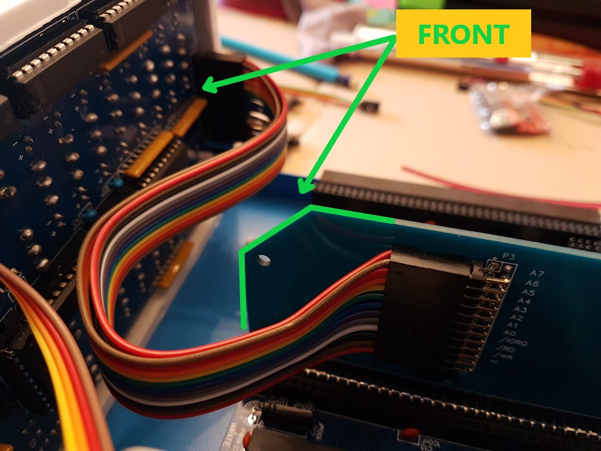 |
| 4 | Attention enficher la carte sur le ct droit du connecteur de bus de 2x40 prises (vu de l'arrire vers l'avant), la premire broche (vers l'avant) se place dans le trou marqu "1" sur le circuit imprim. Normalement, les deux cbles doivent rester parallles. Le plus droite sur Blink'n Switch sera aussi le plus droite sur BusDaughter. Si ce n'est pas le cas, vrifiez le branchement. | |
Faade avant
Ls branchements sont facilits si vous avez connect les cbles de l'cran LCD et du bouton marche/arrt avant de visser la faade :
- Si vous n'avez pas dj fix le cble I2C sur l'cran LCD, dvissez l'cran de la faade, branchez le cble puis revissez l'cran. Reportez-vous la section Faade avant pour le branchement.
- Si vous n'avez pas fix les cbles sur le bouton d'alimentation, dvissez la faade, effectuez les branchements comme indiqu dans la section Faade avant puis revissez la faade.
Faade arrire
Le connecteur d'alimentation sert le bouton marche/arrt de la faade et l'alimentation du SC126. Le bouton Reset est particulirement utile pour les utilisateurs de la carte PiZero Terminal qui ncessite un reset aprs la mise en marche.
Les interrupteurs de slection permettent de choisir entre les deux ROM du SC126 et d'autoriser leur criture pour une mise jour.
Le connecteur HDMI se branche par une rallonge directement sur la carte PiZero Terminal, permettant d'avoir une sortie cran couleur via le logiciel PiGfx.
L'orifice ct de la prise HDMI permet de passer une rallonge USB pour brancher un clavier USB sur un PiZero Terminal. Cette ouverture a t prfre une prise USB en raison des difficults trouver un connecteur appropri.
En bas de la faade, une ouverture permet de passer les cbles utiles pour les nombreux connecteurs du SC126, par exemple la prise srie pour contrler l'ordinateur via une machine de bureau ou portable (si vous avez suivi les indications, un cble est dj install et passe travers cette ouverture).
| Etape | Description | |
|---|---|---|
| 1 | Branchez le raccord HDMI sur le connecteur intrieur de la faade arrire, puis sur votre PiZeroTerminal | |
| 2 | Branchez les deux interrupteurs 3 fils sur les connecteurs JP1 et JP2 du SC126 : attention placer le bon cable sur le bon connecteur selon que vous avez plac RomWBW en U1 et SCM en U2 ou l'inverse. Les fils ne doivent pas se croiser ou subir de torsion : le fil le plus droite sur l'interrupteur est aussi droite sur la carte SC126 et correspond la position "PROTECT" |  |
| 3 | Branchez l'interrupteur 2 fils sur le connecteur P9 : si vous avez RomWBW en U1, les deux fils doivent se situer en bas. Branchez le cable du bouton reset avec les fiches jaunes sur le connecteur P8 et le bouton de la faade. Pour ces deux cablages, la position des fils n'a pas d'importance. | 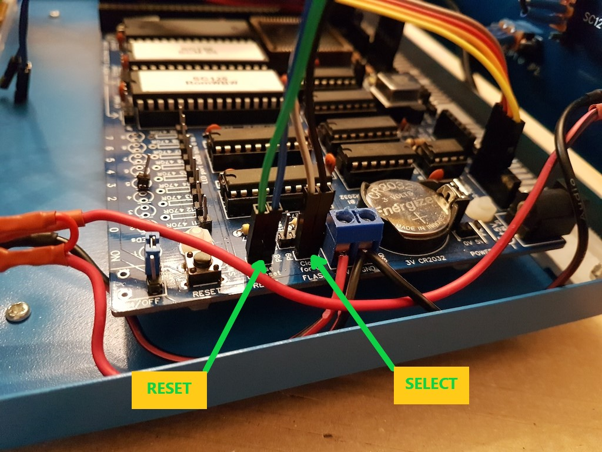 |
Pour l'interrupteur "SELECT" : le connecteur P9 du SC126 slectionne la mmoire 1 ou 2 selon qu'il est ferm (interrupteur de la faade arrire face aux deux fils) ou ouvert (interrupteur sur la position o seul le fil central est connect). Veillez placer l'interrupteur de faon ce que les fils slectionnent bien la ROM qui se trouve l'emplacement concern. Le modle d'installation fourni dans cette documentation convient pour RomWBW situ en U1. Si vous avez invers les ROMs par rapport ce modle vous devrez inverser l'interrupteur de slection verticalement et les cbles trois fils en fonction des indications de la faade arrire.
Bouton Power
Le bouton de la faade avant contrle l'alimentation du SC126 via le connecteur J2. Pour que ce dernier puisse alimenter le SC126 il faut placer l'interrupteur de la carte SC126 en position ON, afin de dporter la fonction ON/OFF sur le bouton de la faade avant.
| Etape | Description | |
|---|---|---|
| 1 | FACULTATIF : si vous avez remplac l'interrupteur du SC126 par un connecteur trois broches, placez un jumper sur les deux broches les plus loignes du bord de la carte. |  |
| 2 | Branchez le fil rouge de la broche C du bouton on/off sur la borne 5V du bornier J2 du SC126 |  |
| 3 | Branchez le fil noir de la broche - et le cble noir spar sur la borne GND du bornier J2 | 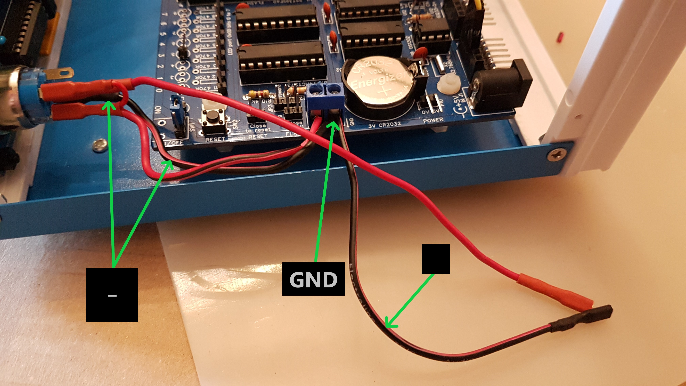 |
| 4 | Branchez le fil rouge provenant du bouton marche/arrt sur la cosse la plus courte du connecteur d'alimentation Branchez le fil noir provenant du bornier J2 sur la cosse la plus longue du connecteur d'alimentation |  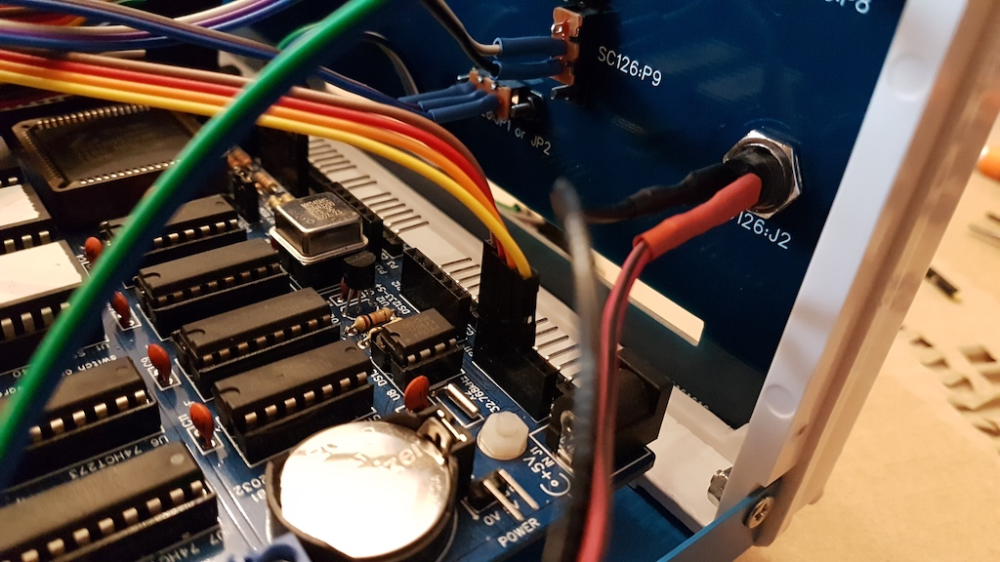 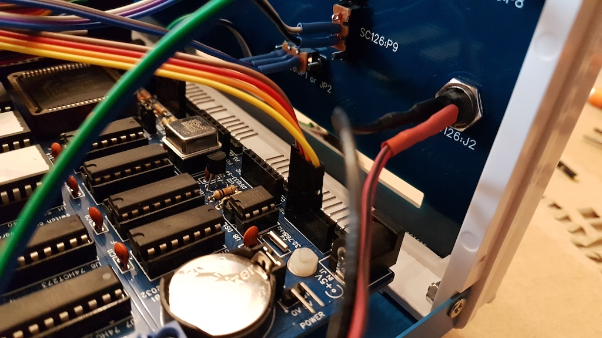 |
Utilisation
Les ports d'entre-sortie sont contrls par des instructions IN et OUT du Z-80 ou du BASIC. L'cran LCD se contrle via l'interface I2C l'aide d'une librairie intgrer dans vos programmes, ou l'aide de versions de SCM et BASIC en cours de dveloppement.
Port de contrle (13/0Dh)
Le port de contrle est cbl sur le numro de port 13 (0Dh), ceci correspond aux deux logiciels de l'ordinateur SC126 : le moniteur SCM affiche l'tat de ses tests l'allumage sur ce port, et le boot de RomWBW affich galement l'avancement de son dmarrage sur ce port.
Tout programme peut allumer ou teindre ces 8 LEDs en envoyant une donne 8-bits sur le port 13. La LED la plus gauche reprsente le bit de poids fort.
Remarque : le port 13 retient sa dernire donne, donc pour teindre les LEDs il faut explicitement crire un 0.
Ports d'entre sortie
Les 2 ports d'entre et de sortie possdent chacun 8 LEDs qui reprsentent les 8 bits de donnes, le bit de poids fort tant reprsent par la LED la plus gauche.
Utiliser le port A ou B en entre
| Etape | Description | |
|---|---|---|
| 1 | Choisissez le numro de port avec le DIPswitch, le bit de poids fort du numro est reprsent par l'interrupteur le plus gauche. Par exemple, pour utiliser le port 7, on place les trois interrupteurs les plus droite en position haute et les cinq autres en position basse. |  |
| 2 | Placez les interrupteurs en position mdiane et connectez vos fils sur le port d'entre | |
| 3 | Les interrupteurs peuvent tre placs en position haute pour forcer un bit 1, ou basse pour le forcer 0 | |
| 4 | L'interrupteur suprieur droite des LEDs les active ou dsactive. Elles affichent l'tat de l'entre qui leur correspond | |
| 5 | utiliser les instructions IN pour lire l'tat du port |
Utiliser le port A ou B en sortie
| Etape | Description | |
|---|---|---|
| 1 | Choisissez le numro de port avec le DIPswitch | |
| 2 | Connectez vos fils sur le port de sortie | |
| 3 | L'interrupteur infrieur droite des LEDs active ou dsactive les LEDs | |
| 4 | Utiliser les instructions OUT pour crire sur le port : 5V sont placs sur les sorties des bits placs 1 | |
Remarque : Chaque port de sortie retient sa dernire donne, donc pour teindre les LEDs il faut explicitement crire un 0.
Ecran LCD
L'cran LCD est contrl par le bus I2C sur le port 0Ch du SC126. Un logiciel spcifique est en cours de finition ainsi qu'une version de SCM et du BASIC en cours de dveloppement capables d'afficher du texte sur l'cran LCD.